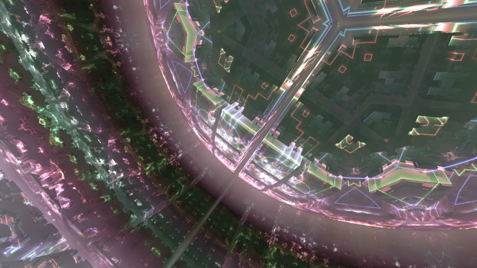

過去にリリースしたメガデモ
English version is here (translate by google).私が過去にリリースしたデモ作品をまとめました。 すべて PC 4K INTRO（ファイルサイズ 4 キロバイト制約のデモ）です。
目次
- 4 キロバイトのメガデモ
- 2017 年 : Final Stage
- 2016 年 : 2nd Stage BOSS
- 2015 年 : Optical Circuit
- 2013 年 : Coacervate Complex
4 キロバイトのメガデモ
- PC 4K INTRO
-
メガデモ
の世界には、PC 4K INTRO と呼ばれる部門があります。
これは、4095 バイト以下の windows 実行ファイル単体に、
どれだけの音と映像を詰め込めるかを競う部門です。
外部のファイルや、ネットワーク上のデータを参照することは許されていません。
圧縮とプロシージャル生成の組み合わせで、どうにかする必要があります。
PC 4K INTRO 実行ファイル 4095 バイトの全体像（1 文字 1 バイト表記）
この中に、レンダラ、サウンドシンセサイザ、データ等すべてが収納されている。
計算上、1 枚のフロッピーディスク（1.44MB）に約 350 作品が収録可能。
- なぜ 4 キロバイト制約なのか
-
なぜ PC 4K INTRO のような厳しい制約を課す部門が存在するかというと、
昨今の PC 環境が進歩しすぎたためです。
無制限では、ミドルウェア、ゲームエンジン、動画素材などの利用が可能で、純粋な戦いになりません。
サイズ制約は非生産的に感じられますが、競技のための「土俵」を成立させるため課されています。
2017 年 : Final Stage
PC 4K INTROwindows exe (filesize 4092 bytes)
{kind=link}
{kind=link}
{kind=link}
{kind=link}
Download | YouTube | Pouet
Optical Circuit シリーズの 3 作目です。 ドイツで開催される世界最大級のデモパーティである Revision Party にて、 PC 4K INTRO 部門 1 位を獲得しました。
過去の 2 作でどうしても入りきらなかった要素を入れるため、レンダリング周りをかなり単純化しました。 しかしそれでも入りきらず、制作は難航しました。 過去 2 作の表現を踏襲しつつ＋α要素を入れる必要があるが、予算（＝ファイルサイズ）は増えないという、 典型的な「シリーズは 3 作目が難しい」罠にハマった形でした。
サウンド周りは Optical Circuit と同じく Bytebeat ベースで、 アルゴリズムによりプロシージャル生成しています。
2016 年 : 2nd Stage BOSS
PC 4K INTROwindows exe (filesize 4095 bytes)
{kind=link}
{kind=link}
{kind=link}
{kind=link}
Download | YouTube | Pouet
Optical Circuit シリーズの 2 作目です。 日本のデモパーティである Tokyo Demo Fest の Combined Demo 部門で 1 位を獲得しました。 また、Meteoriks Award（その年に世界中でリリースされた全デモを対象とする Award）で Best Direction 賞と Best High-End 4k Intro 賞をいただきました。
前作で存在しなかったストーリー的なものを入れることをコンセプトに作成しました。 「主人公登場 → 敵登場 → 戦う → 主人公の勝ち」 という超単純なストーリーですが、 言葉による説明なしで「主人公」と「敵」の区別が付く内容にするだけでも難しく、 ファイルサイズ的にできることも限られており、かなり苦労しました。
サウンドエンジンは YET11 さんにお願いしました。 YET11 さんは当時シェーダプログラミングは初めてとのことでしたが、 コンピュートシェーダを利用した超軽量ドライバを作成してくださいました。 圧縮状態で 800 バイト強というミニサイズでありながら、 映像だけでは伝わりにくいニュアンスをサウンドで補強するという匠の技を披露してくださいました。 容量の都合譜面データが持てないので、アルゴリズムによる半自動生成が行われています。 最後の爆発音は BGM 早回しで生成されています。
2015 年 : Optical Circuit
PC 4K INTROwindows exe (filesize 4074 bytes)
{kind=link}
{kind=link}

{kind=link}
{kind=link}
Download | YouTube | Pouet
このあと続く三部作の 1 作目になりました。 日本のデモパーティである Tokyo Demo Fest の Combined Demo 部門で 1 位を獲得しました。 また、Meteoriks Award で New Talent 賞（新人賞？）をいただきました。
コンセプトはリアルタイムパストレースでした。 鏡面反射ではないグロッシーな反射をリアルタイム実装することにトライしました。 グロッシーな反射は、（2020 年）現在ではよく見られるようになった効果ですが、 2015 年当時はかなり珍しかったのではないかと思います。 デノイザに頼らず、1パス描画で実装しています。
ファイルサイズ削減のため、サウンド周りは Bytebeat と呼ばれる手法をベースとし、 譜面データ無しでアルゴリズムによりプロシージャル生成しています。 本作ではサウンドドライバが頂点シェーダで作られています。
2013 年 : Coacervate Complex
PC 4K INTROwindows exe (filesize 4076 bytes)
{kind=link}
{kind=link}
{kind=link}
{kind=link}
Download | YouTube | Pouet
距離関数で有機物ぽいものが沢山作れることを知り、実装にチャレンジした作品です。 Tokyo Demo Fest 2013 の PC 4K Intro 部門で 1 位を獲得しました。
music は chibi-tech さんにお願いしました。 サウンドドライバは 4klang という、既存の PC 4K Intro 特化型ドライバを使わさせていただきました。 4klang は Renoise Tracker 上で動作するプラグインです。 chibi-tech さんはトラッカーの使いこなしでは私の知りうる限り 最強スキル 保持者の一人で、 4klang を始めて触るにも関わらず、素晴らしいサウンドを作成して下さいました。 容量の都合、曲がフルサイズで収録できなかったのがとても残念です。 フルサイズの曲は soundcloud で聴けます。
4klang は超軽量とは言え、実行ファイル上で 2K バイト程度消費しており、 グラフィクス周りのコードが圧迫され、かなり苦労しました。 結果、カメラのコントロールが入れられず、カメラが壁に突っ込みまくる事故が発生しまくっています。 一作目ということでお目こぼしください。
2021/02/03 初出
2021/02/11 最終更新
文責： よっしん
[戻る]